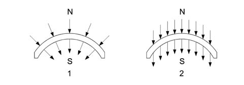
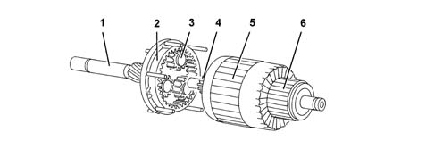
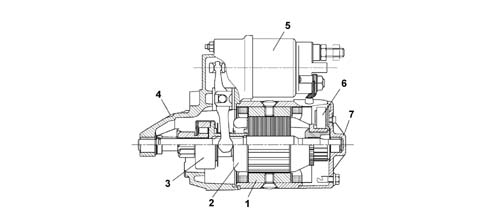

5520B starter motor and components
- Path
- Descriptions > 55 ELECTRICAL EQUIPMENT > 5520 ENGINE STARTING > 5520B starter motor and components
- Kind
- system description
- Applies to
- all engines; all production periods
- Interactive page
- https://sloeber94.github.io/elrnDB-fPnd/en/#/2750960
Applies to: all engines; all production periods
The starting system consists of the ignition switch operated by the key and the starter motor which is connected directly to the battery.
Applies to: all engines; all production periods
CIRCULAR SECTOR MAGNET WITH MAGNETICALLY PRE-ORIENTATED CRYSTALS
The rough components are formed into the desired shape by pressing and extrusion. Finally, after a thorough baking process, the material produces the mangets which are black in colour with a ceramic structure. The magnetizing treatment takes place during the manufacturing process.
The magnets have a circular section and replace the polar section and winding.

1 - Radial orientation 2 - Parallel orientation
Applies to: all engines; all production periods
STATOR-INDUCTOR
The positioning of the magnets cannot take place using strong compression or riveting, also because the magnets are fairly fragile: they are secured by flexible fastenings and springs and, in some cases, they are stuck to the casing. The casing can be compared to a simple mechanical component without wires and is fitted using two stay bolts; it is equipped with 4 magnetic poles.
Applies to: all engines; all production periods
ROTOR-ARMATURE
The diagram below shows the rotor-armature assembly.

1 - Shaft 2 - Ring gear 3 - Satellite/planet gears 4 - Pinion/sun gear 5 - Armature 6 - Manifold/switch
Applies to: all engines; all production periods
ROTOR-ARMATURE
Given that the magnetic field is created by permanent magnets, the energizing is the same in all motor operating conditions; in addition, as there are no energizing windings, there is neither an energizing current nor ohmic resistance: the total resistance depends solely on the armature circuit. The rotation speed is only affected by the current which passes through the blades and reaches the rotor depending on the voltage. Since the motor is equipped with permanent magnets, i.e. with fixed polarity, the direction of rotation depends on how the current is sent to the blades.
When the rotor rotates it transmits movement to the three satellite gears on special supports which transmit their torque to the ring gear on the output shaft where the pinion which rotates the flywheel can be found. The optimum reduction ratio is the presence of the permanent magnets makes it possible to construct motors of equal power from a simple design which are small in size compared with motors which have windings.

1 - Complete polar casing 2 - Armature or rotor 3 - Pinion with free wheel 4 - Pinion side mount 5 - Electromagnets 6 - Brush holder disc 11 - Manifold side mount
Applies to: all engines; all production periods
TECHNICAL DATA
Nominal voltage: 12V
Rated power: 0.8 kw
Pinion side rotation: clockwise
Excitation: 4 permanent magnetic poles
Electro-magnetic operation with pull in and hold in winding
Brushes 2
Free wheel engagement